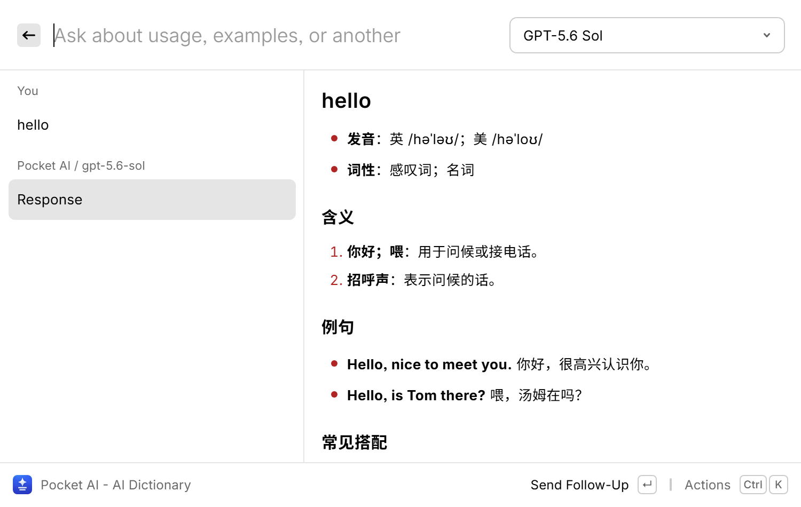

Bring your own model
Connect an OpenAI-compatible endpoint, discover its models, and choose from a dropdown. Use a Copilot-backed bridge if you already have one configured.
Open source · macOS + Windows
An open-source Raycast AI alternative that brings streaming chat, translation, dictionary lookups, and writing tools to the input bar you already use.
No Raycast Pro required. Bring your own provider.
The extension
is free; provider usage, subscriptions, and remote hosting are
separate.
See the workflow
Scripted, interactive illustration.
No live model or API calls.
This illustration explains the workflow. The actual extension uses Raycast's native interface. Backend switching lives in its Actions menu; Direct mode uses the top-bar model dropdown.

Connect an OpenAI-compatible endpoint, discover its models, and choose from a dropdown. Use a Copilot-backed bridge if you already have one configured.
Use Raycast as a frontend for your Hermes or OpenClaw harness. Sessions, tools, web access, and execution stay on your agent server.
Customize prompts, placeholders, target languages, and shortcuts. Keep asking follow-up questions without opening another app.
Get started
Source installation is available now.
You need Raycast and
Node.js 22.22.2 or newer.
Follow the Mac guide or Windows installer guide. Source installs are updated manually.
Set your provider endpoint and optional key, or configure a Hermes/OpenClaw server in Remote Agents.
Launch Ask AI, Dictionary, Translator, or Polish. Assign your own aliases and hotkeys in Raycast.
Good to know
Pocket AI is a free, MIT-licensed extension and does not use Raycast's paid AI API. It does not unlock Raycast Pro features. You supply an accessible model provider or remote agent; their usage charges and terms still apply.
Yes. The project owner has verified the macOS Raycast V1 workflow, including in-tool backend switching. Windows installation and earlier native UI workflows have also been exercised. See the installation guides for exact requirements.
Direct mode sends chat requests to your provider; Pocket AI does not add browsing there. Hermes/OpenClaw can use the tools enabled on your own harness. Raycast is the frontend, not the executor.
Unsent input stays as a draft, without being sent automatically. Contexts are separate. Direct starts fresh on return; remote sessions restore from their server and accepted remote work continues when you switch away.
Keys stay in Raycast's native password preferences. Direct conversations live in invocation memory; remote transcripts live on your harness. Requests go to the provider or server you configure. Pocket AI does not add an analytics service.
No. Pocket AI is an independent open-source extension. Raycast and other product names belong to their respective owners. Raycast Pro and provider access are not included.